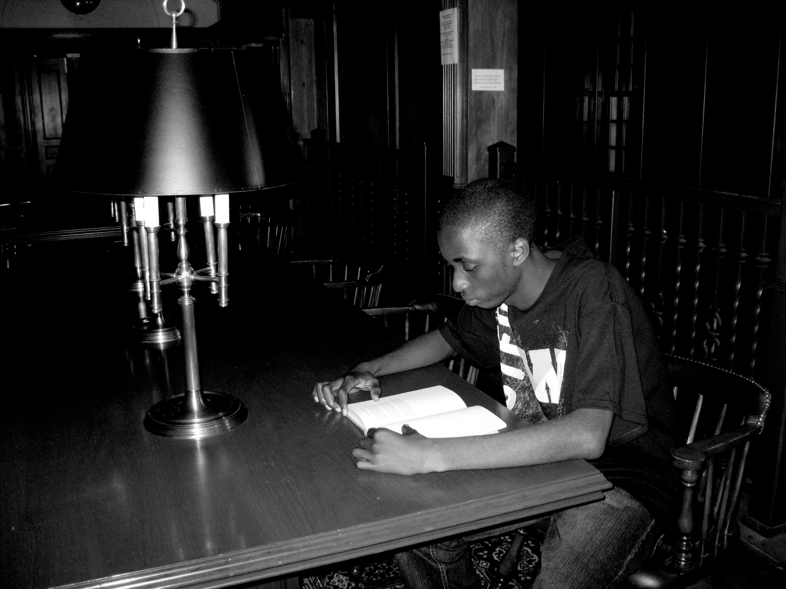

Social & professional


I believe that incorporating the voice of both the rich and the poor in the governance
of society is what will bring about true development. But the situation now is that the
rich and the descendants of the rich have access to higher education opportunities and they
continue to take leadership positions. Chances are that the kids of the rich have the same values
and ideologies as their parents and they would be enforcing those same ideas generation after generation.
From what we have seen already these ideologies don’t work for developing countries like Malawi.
Developing countries need new and improved development strategies, and it is the kids of the poor people that
can bring these fresh ideas to the table if given a chance.
In all the years that I studied developing countries, one thing that I took from my studies was that education
of the poor and the marginalized is the main answer to most of the problems that developing nations are facing.
But now I see that fairness is as equally important and should go together with this education. In Malawi for example,
most women’s potentials and skills are being hindered by the actions and policies of men. As a result most women are
making less or no contribution to the development of society. This calls for change, and the job of bringing about this
change is best for someone who has knowledge of public service law, is dedicated to fighting for human rights, and has
passion for serving the poor and also the marginalized. This is the kind of work I am truly passionate about. I am inspired
and motivated to earn an education that will enable me to become this responsible and helpful individual.